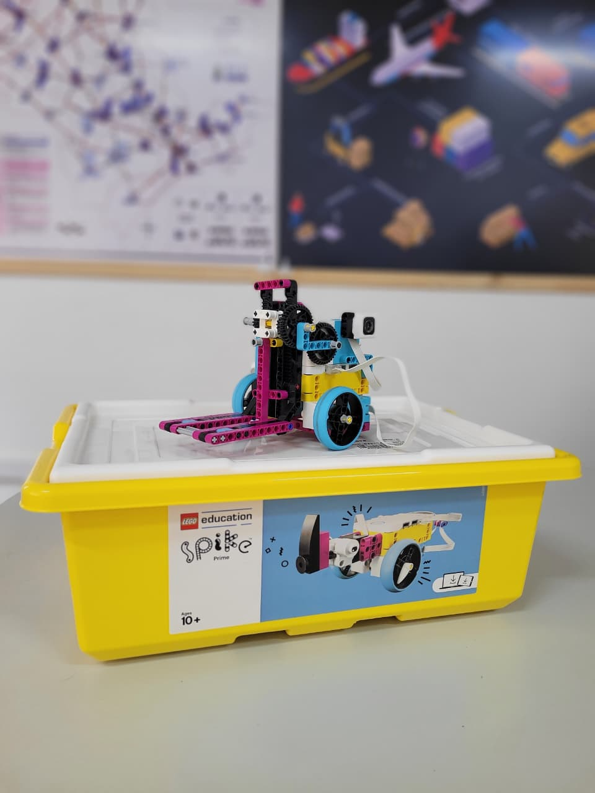

Kit LEGO Spike Prime OPERACIONAL
Categoria: Kit educacional de robótica e programaçãoIdentificação Patrimonial
| Código Interno | KITLEG001 |
|---|---|
| Endereço Físico | ARMB2 |
| Fornecedor | LEGO |
1. Descrição e Finalidade
O LEGO® Education SPIKE™ Prime é um kit educacional de robótica e programação composto por elementos de construção LEGO®, um hub programável, motores e sensores. O conjunto permite a construção e programação de modelos robóticos e sistemas interativos, utilizando programação baseada em blocos e Python. No Laboratório de Logística, o equipamento pode ser empregado em atividades práticas relacionadas à automação, robótica, programação, resolução de problemas e desenvolvimento de soluções aplicadas à logística e à engenharia.

2. Especificações Técnicas
| Marca / Modelo | LEGO Education / SPIKE Prime – 45678 |
|---|---|
| Software | LEGO Education SPIKE |
| Linguagens de programação | Programação por blocos e Python |
| Tipo | Kit educacional de robótica e programação |
| Quantidade de elementos | 528 |
| Hub programável | 1 Hub Grande SPIKE Prime |
| Portas de entradas/saída | 6 |
| Alimentação Elétrica | Bateria interna recarregável via USB-C |
| Conectividade | Bluetooth, USB-C |
| Sensores | Sensor de cor, sensor de distância e sensor de força, motores, matriz luminosa e peças de construção. |
3. Guia Rápido de Operação
Checklist pré-uso:
- Verificar se o Hub possui carga suficiente;
- Conferir a presença dos principais componentes do kit;
- Verificar se sensores e motores estão fisicamente íntegros;
- Verificar se o dispositivo utilizado para programação possui o aplicativo SPIKE;
- Verificar se o Bluetooth está habilitado;
- Organizar as peças necessárias antes do início da atividade.
Cuidados:
- Evitar quedas e impactos no Hub, sensores e motores;
- Não forçar conectores ou cabos durante a montagem;
- Não utilizar peças danificadas;
- Manter líquidos afastados dos componentes eletrônicos;
- Não desmontar o Hub, motores ou sensores;
- Evitar pressionar excessivamente os componentes eletrônicos durante a montagem;
- Manter as peças organizadas e separadas após o uso;
- Não misturar peças de outros kits sem registro;
- Manter o kit em sua caixa e bandejas de organização quando não estiver em utilização;
- Conferir a quantidade de peças após cada atividade.
Passo a passo:
- Preparação: Retirar o kit do local de armazenamento e organizar as peças, sensores e motores necessários para a atividade.
- Ligar o HUB: Ligar o Hub SPIKE Prime e verificar o estado indicado pela matriz luminosa.
- Abrir o aplicativo: Abrir o aplicativo LEGO Education SPIKE no computador, tablet ou outro dispositivo compatível.
- Conectar: Estabelecer a conexão Bluetooth entre o dispositivo e o Hub.
- Desenvolver a atividade: Montar o modelo conforme as instruções da atividade e desenvolver/executar o programa utilizando a interface de programação por blocos ou Python.
- Testar: Executar o programa em ambiente seguro, observando o movimento dos motores e a resposta dos sensores.
- Encerrar: Interromper a execução, desligar o Hub quando aplicável e desmontar/organizar o modelo conforme o procedimento da atividade.
4. Software de Programação
Software utilizado: LEGO Education Spike.
Função: Desenvolvimento, edição e execução dos programas utilizados para controlar os componentes do SPIKE Prime.
Programação: Blocos de programação e Python.
Conexão com o Hub: Bluetooth.
Dispositivo de utilização: Computador, tablet ou outro dispositivo compatível disponível no laboratório.
Acesso: https://education.lego.com/pt-br/downloads/spike-app/software/
5. Manutenção e Conservação
Hub, motores e sensores
- Limpar externamente com pano macio e seco;
- Não utilizar água ou produtos químicos diretamente nos componentes eletrônicos;
- Armazenar os componentes eletrônicos protegidos contra umidade;
- Manter a bateria carregada quando o equipamento permanecer armazenado por período prolongado.
Peças LEGO
- Manter as peças separadas nas bandejas correspondentes;
- Evitar armazená-las em locais úmidos;
- Não aplicar produtos químicos;
- Conferir peças faltantes após cada atividade.
6. Checklist Pós-Uso
Para desligar e guardar o equipamento:
- Encerrar o programa em execução;
- Desconectar o Hub do dispositivo;
- Desligar o Hub;
- Desmontar o modelo utilizado;
- Separar as peças por categoria/bandeja;
- Guardar sensores e motores nos compartimentos correspondentes;
- Conferir se não há peças ou componentes deixados sobre as bancadas;
- Verificar possíveis danos nos componentes;
- Registrar peças/componentes faltantes ou danificados;
- Guardar o kit na caixa apropriada;
- Conectar o Hub ao carregador quando necessário;
- Controle de componentes: conferir peças faltantes ou danificadas após cada atividade e registrar ocorrências.
7. Referências e Documentação
- Página oficial do produto: education.lego.com/pt-br/products/lego-education-spike-prime-set/45678/
- Especificações técnicas: https://education.lego.com/pt-br/product-resources/spike-prime/downloads/technical-specifications/
- Instruções de montagem: education.lego.com/pt-br/product-resources/spike-prime/downloads/building-instructions/
- Aplicativo SPIKE: education.lego.com/en-us/downloads/spike-app/software/